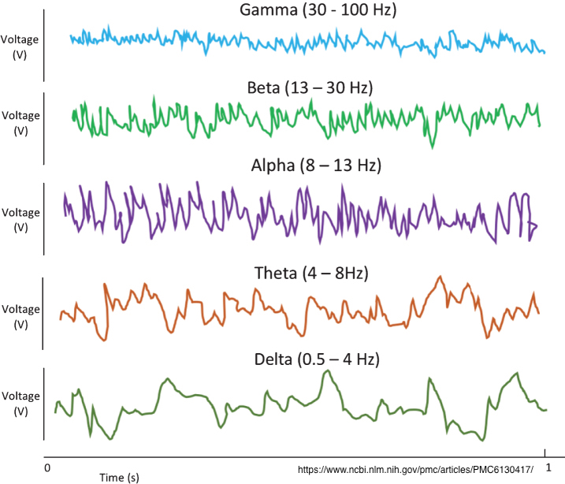
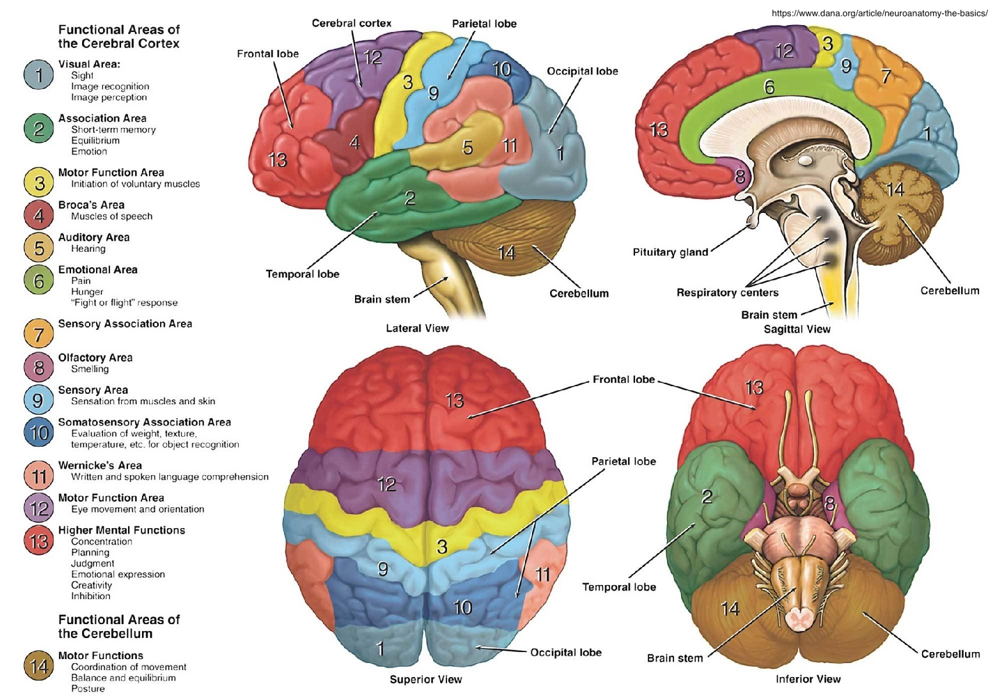
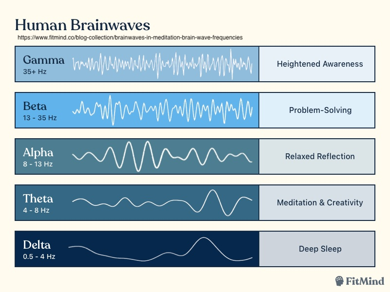
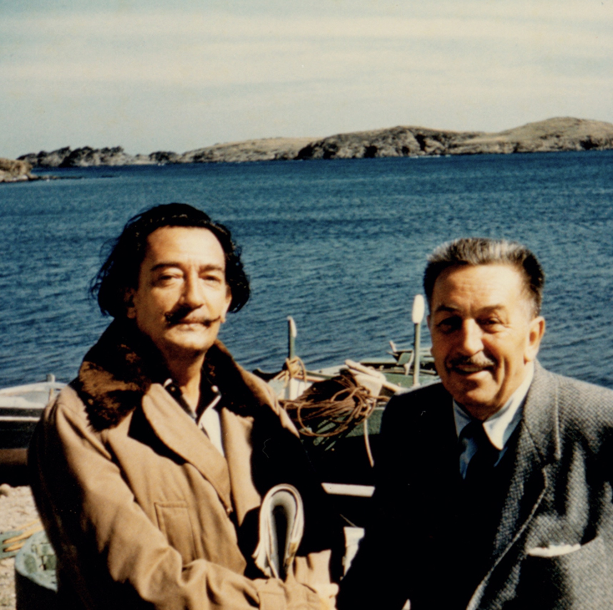

“How she longed to get out of that dark hall, and wander about among those beds of bright flowers and those cool foundations, but she could not even get her head through the doorway; “and even if my head would go through,” thought poor Alice, “it would be of very little use without my shoulders. Oh, how I wish I could shut up like a telescope! I think I could, if I only knew how to begin.” For, you see, so many out-of-the-way things had happened lately, that Alice had begun to think that very few things indeed were really impossible.”1
Brain Waves
This shit is just cool.
There’s no way around it.
Let’s get into it.
It’s Electric! Boogie, Woogie, Woogie
In case you didn’t know, various organs in your body have electrical systems.
Your heart, for example, has an electrical system.
According to the University of Michigan Health, the electrical signal starts in the sinoatrial (SA) node, commonly referred to as the pacemaker of the heart.2
“The cells of the SA node at the top of the heart are known as the pacemaker of the heart because the rate at which these cells send out electrical signals determines the rate at which the entire heart beats (heart rate)”.3
After reading this blog series, and previous posts, I’m hoping you might guess what controls that electrical signal. But, in case you’re new here (Hi, welcome.), “the sympathetic and parasympathetic nervous systems, which have nerve endings in the heart” as well as “hormones, such as epinephrine and norepinephrine, which circulate in the bloodstream” control the rate of the heart beat in a healthy human.4
Okay, so your heart rate has an electrical current.
(Yeah, I get this was a bit of a tangent, but proof of concept is important.)
Turns out, your brain has an electrical current too.
According to Henning Beck, a German brain researcher and biochemist, the human brain works with about 20 watts of electricity.5
What conducts this electricity? Millions of electrical pulses passing between neurons. We’ve discussed this process already. What we didn’t discuss is what happens when many of these signals spread repeatedly.
According to Brit Garner of the YouTube seriesSciShow Psych, “when those signals spread, clusters of neurons start getting feedback from others, and networks of cells synchronize their firing. It becomes a repeating cycle or rhythm: a brainwave, or as neuroscientists call them, neural oscillations.”6
This electrical activity going on in your brain is actually what is measured when doctors perform a technique called electroencephalography or EEG. Dr. Michael C. Levin, explains, “Twenty electrodes are distributed symmetrically over the scalp to detect electrical changes in the brain.”7
These electrodes are designed to find the electrical charges produced by your brain. The findings are graphed, and then read by your healthcare provider. According to John Hopkins Medicine, “During an EEG, your healthcare provider typically evaluates about 100 pages, or computer screens, of activity. [They pay] pay special attention to the basic waveform, but also examine brief bursts of energy and responses to stimuli, such as flashing lights.”8
According to Garner, the study of brain waves in neuroscience is still fairly new. However, recent studies have found a link between brainwaves and consciousness, memory, and even certain diseases.”9
The are a wide variety of different electrical patterns going on in that dome of yours, and they are defined by their frequency. Garner explains, “They’re measured in cycles or the number of times the neurons are firing, per second. Brainwaves also vary in amplitude, with lower amplitudes as they speed up.”10
This is how Scientific American described brain waves way back in 1997: “The electrical oscillations we call brain waves have intrigued scientists and the public for more than a century. But their function—and even whether they have one, rather than just reflecting brain activity like an engine’s hum—is still debated.”11
I point this out to really emphasize how far neuroscience has come, even just in 25 years.12
While many scientists still argue on the exact purpose of each type of brainwave, even Garner notes that there’s no “hard-and-fast rule” about a brainwave’s function, we know a lot more than just “brain waves are just a byproduct of neurons firing.”13
Generally, the rule of thumb re: brain waves is this: the higher frequency of the wave, the more alert and awake you tend to be.14 If it helps, think of brain waves as musical notes. “The low frequency waves are like a deeply penetrating drum beat, while the higher frequency brainwaves are more like a subtle high pitched flute. Like a symphony, the higher and lower frequencies link and cohere with each other through harmonics.”15

All of that being said, it is important to note that you don’t only experience one brain wave type at a time. Brit Garner explains, “The reality is that your brain’s abuzz with all different frequencies of waves. It’s just that certain ones are more dominant at any given moment, depending on what you’re doing and how you’re feeling. If you’re at the pool and sometimes closing your eyes to bask in the sun, you probably have a lot of alpha and theta going on. But there’s still some beta waves in the background.”16
In fact, certain areas of the brain are more often linked with different brain waves.17 Something I’ll get into in a moment.
Okay, let’s break these down a bit more. We’ll start at the higher frequency, lower amplitude brain waves first and work our way to lower frequency, high amplitude brain waves.
First up:
Gamma Waves
- Tend to be measure above 35 Hz
- Can oscillate as fast as 100 Hz
- Hard to measure with existing EEG technology18
According to Dr. Daniel Goleman, author of Emotional Intelligence and Social Intelligence: The New Science of Human Relationships, notes, “All of us get gamma for a very short period when we solve a problem we’ve been grappling with, even if it’s something that’s vexed us for months. We get about half second of gamma; it’s the strongest wave in the EEG spectrum.”19
According to Barry McDermott et al, authors of “Gamma Band Neural Stimulation in Humans and the Promise of a New Modality to Prevent and Treat Alzheimer’s Disease,” “The power of gamma activity is increased during the processing of sensory information and in cognitive tests that involve memory.” 20
Goleman continues, “We get [gamma waves] when we bite into an apple or imagine biting into an apple, and for a brief period, a split-second, inputs from taste, sound, smell, vision, all of that come together in that imagined bite into the apple.”21
Unlike Alpha waves (which I’ll get to in a second), gamma waves have been detected and studied across premotor (just off of the motor function area), parietal, temporal, and frontal cortical regions across both hemispheres of the brain.22
Other wave types, tend to stay in one region of the brain. For example, alpha waves tend to originate from the occipital lobe—which controls vision.23

While many scientists connect gamma waves to concentration, others argue that beta waves are more geared toward concentration and problem solving and gamma is more connected to a “heightened awareness”.
There’s also a lot of interesting studies going on with gamma waves and Alzheimer’s disease. As Garner says, “people with Alzheimer’s don’t seem to use[gamma waves] as much. In fact, restoring gamma waves reduced the amount of bate-amyloid, the plaque protein associated with the disease. The researchers genetically modified mouse neurons so they would respond to light, then flashed pulses at a gamma wave frequency for an hour a day for a week. The animals that received this treatment had half as many plaques in their visual cortex compared to controls. The team thinks that gamma activity somehow makes immune cells in the brain better at gobbling up the plaques, and also changes how the protein is processed, leading to less plaque in the first place…”24
“Their work suggests brainwaves can actually change the biology of the brain.”25
Cool stuff. We’ll talk more about gamma waves in part five, don’t worry.
Moving on.
Beta Waves
- Measure between 12 - 30 Hz
- Seem to happen most frequently when you’re working on a task such as planning a date or actively considering a specific issue.26
According to Darrin J. Lee et al, authors of “Review of the Neural Oscillations Underlying Meditation”, more recently, beta waves “have been linked to attention, emotion, and cognitive control.”27
Interestingly, it was recently discovered that beta waves change in magnitude during positive and negative gambling outcomes.
According to Azadeh HahiHosseini et al, authors of “The role of beta-gamma oscillations in unexpected rewards processing”, “Large increase of beta-gamma oscillatory activity only in unexpected monetary gains was observed, irrespective of its magnitude.”28
So, theoretically, a casino could tell if you’re cheating based on the the frequency of your beta-gamma oscillatory activity—assuming you were simultaneously having an EEG, of course.
If you’re cheating at a casino, you’ll know you’re going to get a pay out leading to less beta-gamma oscillatory activity.
If you’re not cheating at a casino, you won’t know you’re going to get a pay out leading to more beta-gamma oscillations.
This sounds like the plot of a bad Netflix movie.29
While brain waves are different according to every person, some scientists have said that a “snap shot” of all the brain wave patterns in a person could be used as an identifier—similar to a finger print, they are also connected with specific instances throughout the day and where they occur in the brain.30
Garner continues, “Like I can probably guess the moment you open your eyes just by looking at when your alpha waves drop off…kinda freaky.”31
Yeah, Brit. That is kinda freaky.
Alpha Waves
- Measure between 8-12 Hz
- Are most commonly associated with being awake, but having your eyes closed
- As previously mentioned, these waves take place mostly in the occipital lobe (back of the brain).32
Alpha waves are most frequently created during times of wakeful rest.33
Humans begin to experience alpha waves from as early as four months of age, though the frequency is significantly lower. Alpha waves become firmly established and more frequent by the age of three.34
Alpha waves are generally more associated lower stress and deeper breathing.
A nice day at the spa might be a proprietor of some of those good, good alpha waves.
Theta
- Measures between 4-8 Hz
- Often associated with daydreaming or meditation35
Theta waves typically occur when you’re sleeping or dreaming, but they occur less frequently when you are in a deep sleep.36 In healthy adults, theta waves are strongest when focusing internally, like in dream sleep (as previously mentioned), meditation, or prayer. Meaning, theta waves relate to the subconscious mind.37 This also means that theta waves can be prevalent in deep states of concentration.38
Side note: It is common for children thirteen and under to experience theta waves while awake.39 Adults typically only experience theta waves when dreaming, or in deep states of concentration.40
Theta brain waves have recently been closely connected to memory, emotions, and sensations41. According to Anne Trafton, author of “How brain waves guide memory formation”, MIT neuroscientists “found that two brain regions that are key to learning — the hippocampus and the prefrontal cortex— use two different brain-wave frequencies to communicate as the brain learns to associate unrelated objects. Whenever the brain correctly links the objects, the waves oscillate at a higher frequency, called ‘beta,’ and when the guess is incorrect, the waves oscillate at a lower ‘theta’ frequency.”42
“These oscillations may reinforce the correct guesses while repressing the incorrect guesses, helping the brain learn new information, the researchers say.”43
It has also been said that theta waves facilitate a “healing state”. And, are often referred to as “the healing wave”.44 Which, inherently makes sense to me. Sleeping is when the combustion engines that are our brains, hearts, and digestive systems are running on lower frequencies. This allows the body to turn its attention to other matters less important than keeping our brains functioning as we metaphorically and literally move throughout our day. Sleeping releases hormones that encourage tissue repair. The body also has the opportunity to make more white blood cells to attack viruses and bacteria lingering around.45
So, if you can tap into theta waves more often, you are more likely to allow your body to take on those healing measures.
I’m not saying you should stay in a theta state all day, every day. All states of brain waves are equally helpful and necessary to homeostasis.

Flow State
Something worth touching on here is what is called “flow state”.
According to “Flow” an article written by the staff of Psychology Today, “Flow is a cognitive state where one is completely immersed in an activity—from painting and writing to prayer and surfboarding [(Is “surfboarding” the grammatically appropriate form of “surfing? Have I been saying this wrong my entire life?!)]. It involves intense focus, creative engagement, and the loss of awareness of time and self.”46
According to the same article, Mihaly Czikszentmihaly, a Hungarian-American psychologist, discovered the state of flow in the 1960’s after studying the creative process of an artist. While in a flow state the artist did not experience hunger nor fatigue. Instead, they were singularly focused on constructing their art piece. Afterward, Czikszentmihalyi “found that the artist would lose interest after the project was completed, highlighting the importance of the process and not the end result.”47
I have experienced flow state a few times in my life.
Most memorably I remember being in this summer school program for teenagers pursuing the arts. (Don’t get excited, it was a glorified summer camp). All of the music students (this includes me) had to take a class on how to conduct music. Yes, I took a class on how to be a conductor (the person in front of an orchestra with the baton and wavy arms, not the driver of a train).
I, to be honest, wasn’t thrilled with it. While I’ve played piano since I was four, I have always hated music theory and that’s basically all that class was trying to teach us. Any hoo, every Monday (or something) we each had to get up in front of the class and conduct a trio of musicians. It was always the same song every week. The song, while I can’t remember it now, got old, fast.
Whoever didn’t make it into the top X conductors that week was eliminated from the class. The last person left would conduct the trio in a little concert in front of anyone who wanted to come. I had made it a few weeks in, so I wasn’t terrible, but I knew I wasn’t going to make it to the concert.
Even still, I gave it my best every week. (Despite my simultaneous soul-crushing social anxiety and boredom with this piece of music I had heard on repeat for about an hour and a half for multiple weeks in a row.)
One day, I got in front of the three musicians and something just kind of happened.
The only way I know how to describe it is this: The music conducted me instead of me conducting the music.
The music worked my hands, arms, and eyes. I hit every note, every hold, every crescendo. Even the musicians looked at me with surprise as I was guiding them through this piece.
Everyone in the class clapped when the music stopped, and suddenly I was snapped back to reality. I had no idea what I had done. I had no idea what made this specific time so special. For about three minutes I was in some kind of musical fugue state.
I knew I would never be able to repeat what I had accomplished, because I honestly didn’t know what I did differently or how I entered that state.
Unfortunately, I was right. I was eliminated the following week.
According to Czikszentmihalyi, flow states can be accessed by anyone.
Not just teenagers and artists.
“Ultimately, flow is a delicate balance between the tension of anxiety and the tedium of boredom.”48
Which might explain my conducting flow state. I knew I wasn’t going to make it to the final stage, and yet getting in front of my peers and showing a skill I knew I didn’t have was (read: is) literally one of my top 10 fears. Hello, social anxiety, my old friend.
What I remember most about that conducting class from twenty years ago is that for once I didn’t care what my classmates thought. I knew I wasn’t going to make it. I had literally nothing to lose in that moment. So, I let whatever was going to happen happen.
That amount of focus is kind of trippy when you’re not used to it.
Czikszentmihalyi calls this an “optimal experience”.
“Yet we have all experienced times when, instead of being buggered by anonymous forces, we do feel in control of our actions, masters of our own fate. On the rare occasions that it happens, we feel a sense of exhilaration, a deep sense of enjoyment that is long cherished and that becomes a landmark in memory for what life should be like…This is what we mean by optimal experience…It is what a painter feels when the colors on the canvas begin to set up a magnetic tension with each other, and a new thing, a living form, takes shape in front of the astonished creator.”49
When you hear an author talk of their lead characters as if they wrote themselves into existence. That’s flow state.
There’s a lot more I could say about flow. It is a fascinating subject to be honest. But, that would be a bit of TMI for the moment.
I bring up flow because it is now being studied in conjunction to brain waves.
It Wasn’t Just A Tangent
According to Kenji Katahira et al, authors of “EEG Correlates of the Flow State: A Combination of Increased Frontal Theta and Moderate Frontocentral Alph a Rhythm in the Mental Arithmetic Task”, “Flow was investigated in a broad spectrum of activities; for example, chess playing and rock climbing.”50
Katahira and their colleagues performed a test on sixteen total participants. The test asked these participants to conduct a “mental arithmetic task developed in a previous study.”51
“Post-trial self-report of the flow state EEG during task execution were measured and compared among three conditions (Boredom, Flow, and Overload) that had different levels of task difficulty…From the results, the flow state was characterized by increased theta activities in the frontal areas and moderate alpha activities in the frontal and central areas. The former may be related to a high level of cognitive control and immersion in task, and the latter suggests that the load on the working memory was not excessive.”52
“The state of flow is characterized by a sense of intrinsic reward experienced during immersive engagement in an activity.”53
I’m going to leave theta waves for now. I know it’s an unfulfilling way to end a section, but we’ll get to it in more depth. I promise.
Delta Waves
Back to Brit Garner:
- Measures between 0.5- 4Hz
- Linked to deep, dreamless sleep
- The slowest of the waves we’ll discuss today.54
There is debate amongst scientists about the lowest frequency of delta waves. However, one thing is certain, in an alive, healthy adult brain oscillations never go down to zero. A reading of zero would indicated brain death.55
Delta waves and deep sleep have intense healing properties. During delta, we are entirely withdrawn from our senses. Delta waves are generated during the deepest of meditations, and are the “source of empathy, healing, and regeneration.”56
I don’t honestly have a whole lot to say about delta waves here. Instead, I want to delve into what happens when we embrace that beautifully odd sensation of literally oscillating between theta and delta brain waves.
To Sleep, Perchance to Dream
So what do our brainwaves look like when we try to go to sleep?
Ned Herrmann, author of “What is the function of the various brainwaves?”, explains, “When we go to bed and read for a few minutes before attempting sleep, we are likely to be in low beta. When we put the book down, turn off the lights and close our eyes, our brainwaves will descend from beta, to alpha, to theta and finally, when we fall asleep, to delta.”57
Herrmann continues to explain that the human dream cycle is 90 minutes long. Active dreaming occurs when delta oscillations meld into theta oscillations, “and often becomes more experiential to the person. Typically, when this occurs there is rapid eye movement, which is characteristic of active dreaming. This is called REM, and is a well known phenomenon.”58
“When an individual awakens from a deep sleep in preparation for getting up, their brainwave frequencies will increase through the different specific stages of brainwave activity. That is, they will increase from delta to theta and then to alpha and finally, when the alarm goes off, into beta. If that individual hits the snooze alarm button they will drop in frequency to a non-aroused state, or even into theta, or sometimes fall back to sleep in delta.”59
“During this awakening cycle it is possible for individuals to stay in the theta state for an extended period of say, five to 15 minutes—which would allow them to have a free flow of ideas about yesterday’s events or to contemplate the activities of the forthcoming day. This time can be extremely productive and can be a period of very meaningful and creative mental activity.”60
Magic Craftsmanship
Salvador Dali is probably one of my top five favorite artists. His work is weird and wonderful.61 I remember reading that Dali would let himself juuuuust fall asleep and then wake up and write down or draw what he saw in his dreams.
Which begs the question: “Was Dali unintentionally triggering theta waves to ignite a creative spark?”
I would argue, yes, and it was a bit more complicated. Dali actually suggests falling into the deepest of slumber for a fraction of a minute and then using the jolt of beta to theta as the kick start to your creative endeavors.
In Dali’s book, 50 Secrets of Magic Craftsmanship, Dali writes, “Know, then, that Secret Number 3 is that in undertaking an important pictorial work which you are anxious to bring to a successful completion and on which your heart is particularly set, you must before anything else begin it by sleeping as deeply, as soundly as it is possible for you to do. This is absolutely necessary, for without this inaugural sleep you almost sure run the risk that your work will be undertaken prematurely, so that the impatience and the nervous strain involved in the project will make you, so to speak, start on the wrong foot—which is almost the worst thing that could happen to you at the outset.62
“A heavy, long and peaceful sleep will therefore be most propitious, not only to create the physical and psychic calm to be desired in order to attain the coolness necessary to face the white and menacing bull of your virgin canvas which, as the end of your fauna, is to fall immortalized by the death stroke of your last touch, but also and especially, you must know that it is precisely during this sleep, which you wrongly regard as reducing you to a state of paradoxical inactivity and indifference before the imminence of the work which you are preparing to execute, that you will secretly, in the very depths of your spirit, solve most of its subtle and complicated technical problems, which in your state of waking consciousness you would never be humanly capable of solving.63
“So that, at the moment of awakening from this precious preliminary sleep, you are stretching and yawning voluptuously before the Immaculate Conception of your virgin and intact painting, you will be able to say to yourself, without fear of falling into exaggeration, that the principal part—that is to say the sleep—of the work is already done.64
“But this ‘siesta’ (as we shall call it for the moment) will have to be of very short duration…Know, therefore, that your afternoon sleep must last less than a minute, less than a quarter of a minute, since, as you will immediately realize, a mere second is infinitely too long…You must resolve the problem of ‘sleeping without sleeping,’ which is the essence of the dialectics of the dream, since it is a repose which walks in equilibrium on the taut and invisible wire which separates sleeping from waking. And this kind of slumber, which is conscious of the fact that it does not even achieve the state of slumber, is called the ‘slumber with a key.’65
Drake Baer, author of “How Dali, Einstein, and Aristotle Perfected The Power Nap, paints (no pun intended) a delightful word picture, “Salvador Dali, the master of surrealism, is slouching in his chair. In his right hand he holds a key. Beneath his hand is an upside-down plate. Once he falls into a deep sleep, his hand releases the key which clangs onto the plate and the painter awakes with a start, refreshed and ready to get weird.”66
Dali again, “The moment the key drops from your fingers, you may be sure that the noise of its fall on the upside-down plate will awaken you, and you may be equally sure that this fugitive moment when you had barely lost consciousness and during which you cannot be assured of having really slept is totally sufficient, inasmuch as not a second more is needed for your physical and psychic being to be revivified by just the necessary amount of repose.”67
I have two thoughts here of equal importance.
- For a guy that hung out with Walt Disney (like a lot) Dali is one pretentious dude.68
- Dali was essentially instructing people how to enter a meditative, theta- wave state.
I know that was a lot of Dali’s book. But I mean, c’mon. The guy is insanely fascinating. It was also important to my point.
Dali was making it quite clear that you didn’t want to sleep too long. A long sleep would have the potential to force you into a state scientists call “sleep inertia”. According to Dr. Lynn Marie Trotti, author of “Waking up in the hardest thing I doo all day: Sleep inertia and sleep drunkenness”, Sleep inertia is “a distinct state that is measurably different from wakefulness and manifests as performance impairments and sleepiness.”69
Sleep inertia limits your ability to “hold on” to the answers that your dream-state held.
What Dali didn’t not realize, however, is that mediation and other yogic techniques can hold you in that theta wave to beta wave and back again state. No masochism necessary.
Dali wasn’t the only one.
Baer writes, “The just beginning to dream part is important, as the halfway dream state [has] animated poets, inventors, and the like for ages.”70
The list includes:
- “Poet Samual Taylor Coleridge, who ‘Kubla Khan’ is a record of half-dreamed reverie
- “Composer Ludwig van Beethoven, who grabbed ideas while napping in his carriage
- “Inventor Thomas Edison, who said that his mind was flooded with images when he was half-awake
- “Composer Richard Wagner, whose Ring Cycle has hypnagogic images
- “Philosopher John Dewey, who said people were most creative when they are ‘relaxed to the point of reverie”71
- Aristotle
- Leonardo Da Vinci
- Albert Einstein
- Napoleon Bonaparte
- JFK
- Winston Churchill72
Do you want to tell these people that a lot of the benefits they got while power napping could have also been achieved through brain wave manipulation or should I?
What Does All Of This Have To Do With Depression and Anxiety?
I’d love to tell you. Next time.
Coming up: The conclusion of “The Science of Meditation: A Hypothesis on How and Why Meditating Can Help Depression and Anxiety”.
Stay tuned.
-
Carroll, Lewis, and Hugh Haughton. Alice’s Adventures in Wonderland; and, through the Looking-Glass and What Alice Found There. Barnes & Noble Books, 2003. ↩
-
Healthwise Staff. “Electrical System of the Heart.” Electrical System of the Heart | Michigan Medicine, 31 Aug. 2020, https://www.uofmhealth.org/health-library/te7147abc. ↩
-
Ibid. ↩
-
Ibid. ↩
-
I found an article on Scientific American’s website that said the brain can use as much as 10 watts of electrical power. That article, while I will use it for the foundational information about brainwaves, was published in 1997 and is now nearly 30 years old. Which, in case you were wondering, does make me feel old. Also, time is weird.
“‘The Brain Works with 20 Watts. This Is Enough to Cover Our Entire Thinking Ability.”: Munich Re Topics Online.” Munichre.com, 8 July 2019, https://www.munichre.com/topics-online/en/digitalisation/interview-henning-beck.html. ↩
-
I know it’s weird to use a YouTube channel for scientific data. But they have their sources in the show notes, and it is co-hosted by Hank Green—Gen Z’s Bill Nye.
It’s a good resource.
SciShow Psych. “What Do Different Brainwaves Mean? - Youtube.” YouTube, 10 Aug. 2017, https://www.youtube.com/watch?v=gvpuOBezW0w. ↩
-
Levin, Michael C. “Electroencephalography (EEG) - Neurologic Disorders.” Merck Manuals Professional Edition, Merck Manuals, July 2021, https://www.merckmanuals.com/professional/neurologic-disorders/neurologic-tests-and-procedures/electroencephalography-eeg. ↩
-
“Electroencephalogram (EEG).” Johns Hopkins Medicine, https://www.hopkinsmedicine.org/health/treatment-tests-and-therapies/electroencephalogram-eeg. ↩
-
SciShow Psych. https://www.youtube.com/watch?v=gvpuOBezW0w. ↩
-
Ibid. ↩
-
“What Is the Function of the Various Brainwaves?” Scientific American, Scientific American, 22 Dec. 1997, https://www.scientificamerican.com/article/what-is-the-function-of-t-1997-12-22/. ↩
-
Hi, yeah, I know I can’t believe it either. 1997 was actually 25 years ago. I did the math on a calculator just to be sure. ↩
-
SciShow Psych. https://www.youtube.com/watch?v=gvpuOBezW0w. ↩
-
Ibid. ↩
-
“What Are Brainwaves?” What Are Brainwaves? Types of Brain Waves | EEG Sensor and Brain Wave – UK, https://brainworksneurotherapy.com/what-are-brainwaves. ↩
-
SciShow Psych. https://www.youtube.com/watch?v=gvpuOBezW0w. ↩
-
Ibid. ↩
-
Larson, Jennifer. “Gamma Brain Waves: Uses, Purpose, Benefits, Function, More.” Edited by Alana Biggers, Healthline, Healthline Media, 22 June 2020, https://www.healthline.com/health/gamma-brain-waves#other-brain-waves. ↩
-
Big Think. “Superhumans: The Remarkable Brain Waves of High … - Youtube.” Superhumans: the Remarkable Brain Waves of High-Level Meditators | Daniel Goleman | Big Think, YouTube, 13 Sept. 2018, https://www.youtube.com/watch?v=10J6crRacZg. ↩
-
McDermott, Barry, et al. “Gamma Band Neural Stimulation in Humans and the Promise of a New Modality to Prevent and Treat Alzheimer’s Disease.” Edited by Amy Clements-Cortes, Journal of Alzheimer’s Disease: JAD, IOS Press, 19 July 2018, https://www.ncbi.nlm.nih.gov/pmc/articles/PMC6130417/. ↩
-
Big Think. https://www.youtube.com/watch?v=10J6crRacZg. ↩
-
Kort, Naomi S, et al. “Bihemispheric Network Dynamics Coordinating Vocal Feedback Control.”John Wiley and Sons Inc., 25 Apr. 2016, https://www.ncbi.nlm.nih.gov/pmc/articles/PMC6867418/. ↩
-
SciShow Psych. https://www.youtube.com/watch?v=gvpuOBezW0w. ↩
-
Ibid. ↩
-
Ibid. ↩
-
“Brain Waves and Meditation.” ScienceDaily, ScienceDaily, 31 Mar. 2010, https://www.sciencedaily.com/releases/2010/03/100319210631.htm. ↩
-
Lee, Darrin J, et al. “Review of the Neural Oscillations Underlying Meditation.” Frontiers, Frontiers, 26 Mar. 2018, https://www.frontiersin.org/articles/10.3389/fnins.2018.00178/full. ↩
-
HajiHosseini, Azadeh, et al. “The Role of Beta-Gamma Oscillations in Unexpected Rewards Processing.” NeuroImage, vol. 60, no. 3, 2012, pp. 1678–1685., https://doi.org/10.1016/j.neuroimage.2012.01.125. ↩
-
Don’t steal my intellectual property, now. This is my terrible movie plot idea. ↩
-
SciShow Psych. https://www.youtube.com/watch?v=gvpuOBezW0w. ↩
-
Ibid. ↩
-
Ibid. ↩
-
Larson, Jennifer. “Alpha Brain Waves: What Are They and Why Are They Important?” Edited by Heidi Moawad, Healthline, Healthline Media, 9 Oct. 2019, https://www.healthline.com/health/alpha-brain-waves#what-are-they. ↩
-
Niedermeyer, E. “Alpha Rhythms as Physiological and Abnormal Phenomena.” International Journal of Pscychophysiology, vol. 26, no. 1-3, 1997, pp. 31–49., https://doi.org/https://doi.org/10.1016/S0167-8760(97)00754-X. ↩
-
SciShow Psych. https://www.youtube.com/watch?v=gvpuOBezW0w. ↩
-
Larson, Jennifer. “Theta Brain Waves: Frequency, Sleep, Binaural Beats, and More.” Edited by Alana Biggers, Healthline, Healthline Media, 1 July 2020, https://www.healthline.com/health/theta-waves#what-are-they. ↩
-
Eat your heart out, Carl Jung.
“The Science of Brainwaves - the Language of the Brain.” NeuroHealth Associates, 2 Dec. 2019, https://nhahealth.com/brainwaves-the-language/. ↩
-
Travers, Colleen. “Why Theta Brain Waves Are so Healing + How to Generate Them More Often.” Edited by Kristina Hallett, Mindbodygreen, Mindbodygreen, 3 Dec. 2021, https://www.mindbodygreen.com/articles/theta-waves. ↩
-
“The Science of Brainwaves - the Language of the Brain.” NeuroHealth Associates, 2 Dec. 2019, https://nhahealth.com/brainwaves-the-language/. ↩
-
Travers, Colleen. https://www.mindbodygreen.com/articles/theta-waves. ↩
-
“The Science of Brainwaves - the Language of the Brain.” https://nhahealth.com/brainwaves-the-language/. ↩
-
Trafton, Anne. “How Brain Waves Guide Memory Formation.” MIT News Office, MIT, 23 Jan. 2015, https://news.mit.edu/2015/brain-waves-guide-memory-formation-0223. ↩
-
Ibid. ↩
-
Travers, Colleen. https://www.mindbodygreen.com/articles/theta-waves. ↩
-
Chicago Tribune Staff. “Four Crucial Ways That Sleep Helps the Body to Heal.” Chicagotribune.com, Chicago Tribune, 15 Dec. 2018, https://www.chicagotribune.com/suburbs/advertising/marketplace/ct-ss-suburbs-four-crucial-ways-that-sleep-helps-the-body-to-heal-20180112dto-story.html. ↩
-
Psychology Today Staff. “Flow.” Psychology Today, 2021, https://www.psychologytoday.com/us/basics/flow. ↩
-
Ibid. ↩
-
Ibid. ↩
-
Csikszentmihalyi, Mihaly. Flow: The Psychology of Optimal Experience. Harper and Row, 2009. ↩
-
There are also accounts of professional athletes of all ilks reaching this kind of flow state during competitions. I know of runners and Formula 1 specifically that speak on this a lot.
Katahira, Kenji, et al. “EEG Correlates of the Flow State: A Combination of Increased Frontal Theta and Moderate Frontocentral Alpha Rhythm in the Mental Arithmetic Task.” Frontiers in Psychology, Frontiers Media S.A., 9 Mar. 2018, https://www.ncbi.nlm.nih.gov/pmc/articles/PMC5855042/. ↩
-
Ibid. ↩
-
Ibid. ↩
-
Ibid. ↩
-
SciShow Psych. https://www.youtube.com/watch?v=gvpuOBezW0w. ↩
-
Herrmann, Ned. “What Is the Function of the Various Brainwaves?” Scientific American, Scientific American, 22 Dec. 1997, https://www.scientificamerican.com/article/what-is-the-function-of-t-1997-12-22/. ↩
-
Bollapragada, Manikanta. “Fig. 1: Brainwaves Infra Low Waves Have Frequencies That Are Less than…” Novel Solution to Improve Mental Health by Integrating Music and IoT with Neural Feedback, ResearchGate, 15 Dec. 2019, https://www.researchgate.net/figure/Brainwaves-Infra-low-waves-have-frequencies-that-are-less-than-05-Hz-They-play-major_fig1_337933268. ↩
-
Herrmann, Ned. “What Is the Function of the Various Brainwaves?” Scientific American, Scientific American, 22 Dec. 1997, https://www.scientificamerican.com/article/what-is-the-function-of-t-1997-12-22/. ↩
-
Ibid. ↩
-
Oof been there.
Ibid. ↩
-
Ibid. ↩
-
Don’t @ me.
Also, if you ever happen to find yourself in Barcelona. Take the train ride to the Dali Theatre-Museum. Or, if you find yourself in St. Petersburg, Florida, go to a museum called The Dali. Both are phenomenal. ↩
-
Dalí, Salvador. “Chapter 2: The Secret of the ‘Slumber with a Key.’” 50 Secrets of Magic Craftsmanship, Dover Publications, Inc, New York, NY, 1992, pp. 33–34. ↩
-
Dalí, Salvador. 50 Secrets of Magic Craftsmanship, pp. 33–34. ↩
-
Dalí, Salvador. 50 Secrets of Magic Craftsmanship, pp. 33–34. ↩
-
Dalí, Salvador. 50 Secrets of Magic Craftsmanship, pp. 33–34. ↩
-
Baer, Drake. “How Dali, Einstein, and Aristotle Perfected the Power Nap.” How Dali, Einstein, and Aristotle Perfected The Power Nap, Fast Company, 10 Dec. 2013, https://www.fastcompany.com/3023078/how-dali-einstein-and-aristotle-perfected-the-power-nap. ↩
-
Dalí, Salvador. “Chapter 2: The Secret of the ‘Slumber with a Key.’” 50 Secrets of Magic Craftsmanship, Dover Publications, Inc, New York, NY, 1992, pp. 33–34. ↩
-
Don’t believe me? They made an animated short together.

Don’t get me started on Disney. That guy is his own special kind of crazy. (Don’t @ me.) ↩
-
Trotti, Lynn M. “Waking up Is the Hardest Thing I Do All Day: Sleep Inertia and Sleep Drunkenness.” Sleep Medicine Reviews, U.S. National Library of Medicine, Oct. 2017, https://www.ncbi.nlm.nih.gov/pmc/articles/PMC5337178/. ↩
-
Baer, Drake. https://www.fastcompany.com/3023078/how-dali-einstein-and-aristotle-perfected-the-power-nap. ↩
-
Ibid. ↩
-
Webster, Victoria. “11 Most Surprising Famous People Who Loved to Nap.” 11 Most Surprising Famous People Who Loved To Nap, The Carousel, 5 Feb. 2022, https://thecarousel.com/health/11-most-surprising-famous-people-who-loved-to-nap/. ↩
){kind=link}